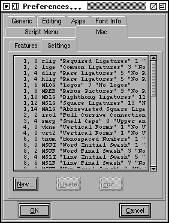
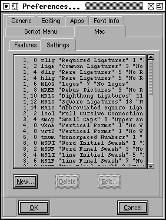

Preferences Dialog

-
AutoHint
-
Whether characters should be automagically hinted before a bitmap character
is generated (improves the quality of the bitmap)
-
LocalEncoding
-
The default encoding used by the operating system (ie. text that is pasted
into pfaedit will be assumed to be in this encoding). If you select "Default"
here, pfaedit will attempt to guess the correct encoding by looking at:
LC_MESSAGES, LC_ALL, LANG environment variables.
-
NewCharset
-
The default encoding used to create new fonts. Normally this is ISO 8859-1.
-
NewEmSize
-
Specifies the default number of em-units in the em-square. For PostScript
fonts this should be 1000, for truetype fonts it should be a power of two
(often 512, 1024 or 2048 will be used).
-
NewFontsQuadratic
-
Splines in fonts may be either in quadratic or cubic format. TrueType fonts
use quadratic splines while PostScript (and OpenType) fonts use cubic splines.
When PfaEdit generates a font it will convert from whatever format is used
internally to whatever format is required for the font, so there will be
no problem if this is set incorrectly, but setting it correctly for your
font means you get a clearer idea of what the outlines will look like.
-
LoadedFontsAsNew
-
When PfaEdit reads in a font it will generally keep the splines in the format
they used in the font (that is quadratic for truetype fonts and cubic for
postscript). If you set this flag then all loaded fonts will have the same
file format as that specified by NewFontsQuadratic above.
-
GreekFixup
-
Whether to accept Adobe's naming conventions for greek letters, or to make
them a bit more expected.
-
ResourceFile
-
PfaEdit will read X Resources from a property on
the screen. But sometimes this isn't enough. You set this preference item
to specify a file from which these resources should be read (those on the
screen will also be read and will supercede those in the file).

-
AutoWidthSync
-
Whether you want the widths of accented characters to track the width of
the base character (so if you modify the width of A then the width of À
will automagically change, if À is built as a reference to A and a
reference to grave)
-
AutoLBearingSync
-
Whether you want left side bearings of accented characters to track the left
side bearing of base characters (so if you shift A left, then the accent
in À will also be shifted left)
-
ItalicConstrained
-
Whether constrained motion in the character view should allow motion parallel
to the italic angle as well as horizontal and vertical.
-
AccentOffsetPercent
-
The amount of space (as a percentage of the em-square) that should be placed
between an accent and the character below it by the Build Accented Character
command.
-
AccentCenterBottom
-
Whether accents should be positioned over letters based on the center of
the accent, or on the center of the bottom of the accent.
-
ArrowMoveSize
-
The number of em-units an arrow key will move a selected point in the character
view.
-
SnapDistance
-
The maximum distance at which pointer motion in the character view will be
snapped to an interesting object (ie. a point, baseline, width line, etc.).
This is measured in pixels.
-
JoinSnap
-
The maximum distance between the endpoints of two splines before they will
join with the Edit->Join command. This is measured in pixels in the char
view and em-units elsewhere.
-
CopyMetaData
-
Controls the behavior of Edit->Copy from the fontview. Normally Copy does
not copy a character's metadata (name, encoding, etc.) but if this is set
then it will.
-
UndoDepth
-
Controls the maximum number of Undoes that may be retained in a character.
(In some rare occasions an Undo will be stored if this depth is
0)

-
Foundry Name
-
Used in generating bdf files (part of the X Windows font naming convention).
-
TTF Foundry
-
Similar to the above except that it is used inside ttf files (the achVendID
field of the OS/2 table) and is limitted to 4 characters.
-
XUID-Base
-
The base
"XUID".
Should uniquely identify the user's organization. If present then every new
font will be given an XUID generated by appending a random number to the
end of this string (which should consist of a set of numbers separated by
spaces). Whenever a postscript font is generated then this last number will
be incremented by 1.
I have registered with Adobe and they have assigned PfaEdit an extended unique
id base of [1021]. When you first start PfaEdit, PfaEdit will itself append
a couple of random numbers to this to give you your own extended unique id.
And individual fonts will get a fourth number added to that.
If you want you may
register
directly with Adobe for your own XUID base.
See also Adobe's comments on
UniqueIDs.
-
AskBDFResolution
-
Normally PfaEdit will guess at what screen resolution you intend based on
the pixel size of the font (ie. 17 pixel fonts are usually 100dpi (12pt)
and 12 pixel fonts are usually 75dpi), but sometimes you will have more esoteric
desires. Setting this will give you more control, but you have to click through
another dlg.
-
DumpGlyphMap
-
Sometimes it is useful to have a mapping from ttf (or otf) glyph ID to character
name. If you turn this on, then each time you generate a ttf/otf font you
will also get a file with extension .g2n containing this mapping.
-
PreferCJKEncoding
-
This controls the loading of truetype and opentype fonts. If a font contains
both an unicode encoding subtable and a cjk subtable, then this item allows
you to pick which one PfaEdit will choose to decode.
-
HintForGen
-
Whether characters should be automagically hinted before a font is generated.
-
AlwaysGenApple
-
If you always want to generate Apple style TTF fonts (and never windows ones)
then select this item.
-
 AutotraceArgs
AutotraceArgs
-
This allows you to specify any arguments you want passed to the autotrace
program. Don't try to pass something that will change the input or output
format or set input or output files.
-
AutotraceAsk
-
If this is set then each time autotrace is invoked it will ask you for arguments.
-
MfArgs
-
This is the command passed to the mf (MetaFont) program which controls conversion
of .mf files into bitmaps.
-
MfClearBg
-
Loading a .mf font is a multi step process, first a bitmap font is generated,
it is loaded into the background, then autotrace is invoked to trace around
the backgrounds. These background bitmaps can take up a lot of space and
you may not want them after they have been autotraced. Selecting this entry
will remove those bitmaps from the font after they have been used.
-
MfShowErr
-
The mf program generates a fair amount of verbiage even when it is working
correctly. And if it is working correctly you don't want to see those words.
So normally PfaEdit suppresses messages from mf. But if something goes wrong
you do want to see mf's output and setting this will allow you to do
so.
 This
section of the dialog allows you to define built in scripts that will
show up in the script menu. Each entry
has two things associated with it, the menu name and a script file. The menu
name will be the name of this entry inside the script menu, and the
script file will be the filename of the file
to be invoked. The "..." button allows you to browse for script files, which
I think have extension .pe (but which can have whatever extension you prefer
if you don't like my conventions).
This
section of the dialog allows you to define built in scripts that will
show up in the script menu. Each entry
has two things associated with it, the menu name and a script file. The menu
name will be the name of this entry inside the script menu, and the
script file will be the filename of the file
to be invoked. The "..." button allows you to browse for script files, which
I think have extension .pe (but which can have whatever extension you prefer
if you don't like my conventions).
 The Mac Features
and Settings dialog allows you to define a mapping between OTF
The Mac Features
and Settings dialog allows you to define a mapping between OTF
GSUB feature tags (which are what PfaEdit uses to identify
substitutions internally) and Apple's
mort/morx
Feature/Setting codes.
Apple's published
list of features and settings appears out of date (in that some features
used by current fonts are not found in it).
A four letter OTF feature tag may correspond to a mac feature/setting
combination. If you wish to create a new mapping you must first insure that
the mac feature you desire is present in the feature list (at left), and
then you may add the mapping in the settings list (at right).
You must specify a mac feature (which must already be defined), a mac setting
code, a name for the setting, a setting code to turn the feature off (or
-1 if there is none), a name for the off setting, a four letter otf tag,
and two flags: whether this setting should be on by default, and whether
all the settings in this feature form a mutually exclusive system (like a
radio button).

Other ways of configuring
A number of things that might be controlled from a preference window are
controlled by
-- Prev -- TOC --
Next --